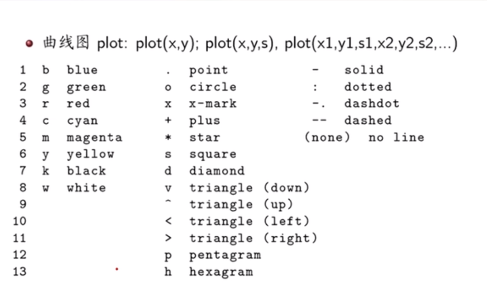
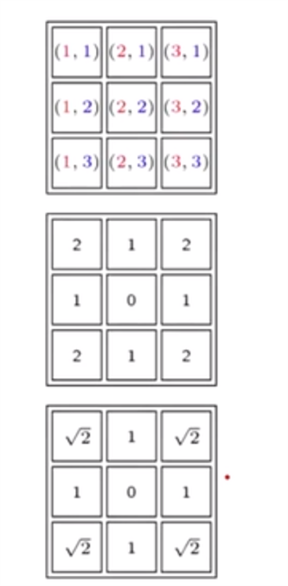

简介
Matlab 是 Matrix 和 Laboratory (矩阵实验室)的缩写，所以最初创造它的目的就是解决线性代数中的矩阵运算问题的。Matlab是一种用于算法开发，数据可视化，数据分析以及数值计算的高级技术计算语言和交互式环境。
（本文每个代码块都是可以独立运行的，可以运行试试, 但有时记得clear一下）
学习笔记
基础语法
1 | a = 1 %意味着a是一个double的数据 |
结构体
1 | a.x = 1 |
固定变量
1 | pi %显示3.1416 |
常用的数学函数: sin(x),asin(x),abs,sqrt,ceil,fix,floor,round
1 | x = 0:pi/6:pi %第二个数值pi/6指的是步长 |
基本语句的一个举例
1 | x = 0; |
矩阵的基本运算
一些常用的操作
1 | x = [1 2 3; 4 5 6; 7 8 9] |
初始化矩阵
1 | x = [1 2 3; 4 5 6; 7 8 9] %分号代表换行 或者是: |
矩阵的基本运算
1 | A = [1 2 3; 4 5 6; 7 8 9]; %末尾有分号代表系统不必输出该矩阵。 |
矩阵或者数组行列块的取值与赋值
1 | A = [1 2 3; 4 5 6; 7 8 9]; |
比较和逻辑运算
1 | A = [1 2 3 |
数组操作函数: flipud fliplr rot90
1 | A = [1 2 3; 4 5 6; 7 8 9]; |
矩阵求和，最大值
1 | A = [1 2 3; 4 5 6; 7 8 9]; |
###
Matlab的简单作图
二维曲线图
1 | x = -2*pi:0.1:2*pi; %指的是x的区间从-2π-2π,0.1为步长，就是每隔0.1画一个点，大的话就不太准确了（亲测） |
说说图的曲线可以有哪些格式:
(这样大家就可以随意改动曲线的格式了)

补充内容
1 | grid on %添加网格图，可以试一下 |

三维曲线图举例
高数中刚刚接触的螺旋线。
1 | t = 0:pi/50:10*pi; %10π就是转了5圈 |